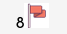

Comment gagner au démineur ?

Le but du jeu des de découvrir toutes les cases minées en évitant de faire exploser les mines
Il suffit de faire un clic droit sur une case pour lui ajouter un drapeau et ainsi marquer une case piégée
Pour dévoiler une case, il faut faire un clic gauche dessus
Le compteur au dessus de la grille vous indique le nombre de drapeau qu'il vous reste pour déterminer les cases minées (il n'indique en aucun cas le nombre de bombes qu'il reste à trouver) 
Le chiffre indiqué sur une case permet de déterminer le nombre de bombes qui se trouvent sur les 8 cases voisines de cette case.
Sur l'exemple ci dessus, on détermine en observant la case du milieu à droite qu'on peut cliquer sans soucis sur la case du bas. En effet la case du milieu à droite n'a qu'une seule mine parmi ses cases voisines et cette mine à déjà été dévoilée par le drapeau.
En continuant de cette façon vous pourrez résoudre les premiers niveaux. Pour le niveau expert, il vous faudra parfois faire des suppositions.
Le démineur est un jeu qui demande de la logique et cette logique vient avec l'expérience. Alors à vous de jouer !